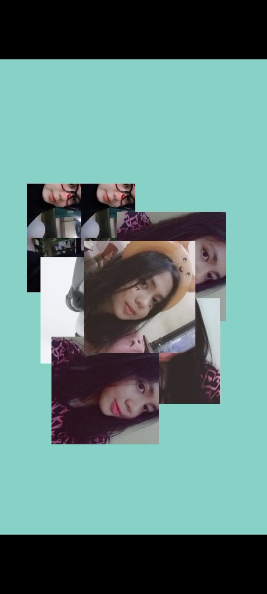

❤
Untuk Nazwa
Kenangan manis — berputar dengan elegan

Nazwa, terima kasih untuk semua tawa dan kenangan yang indah.
— Dari seseorang yang masih mengingat
Kadang rindu datang tanpa alasan, mungkin karena kenangan yang terlalu manis.
— Dari seseorang yang masih mengingat
Aku disini selalu menunggu kamu buat balik sama aku, kita buka lembaran baru dan lebih bahagia lagi.
— Dari seseorang yang selalu menanti